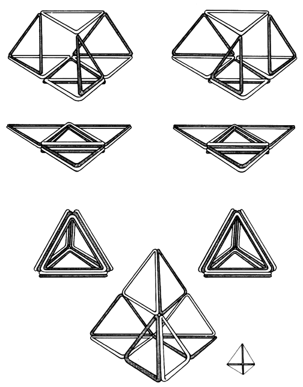

|  |
| Fig. 461.08 Jitterbug System Collapses into Tetrahedron: Polarization: The "jitterbug" system, after reaching the octahedron phase, may be collapsed and folded into the regular tetrahedron. Notice that because the vector equilibrium has 24 edges the tetrahedra have accumulated four edges at each of their six normal edges. The "jitterbug" can also be folded into a larger but incomplete tetrahedron. Note that in this case the two sets of double edges suggest polarization. |